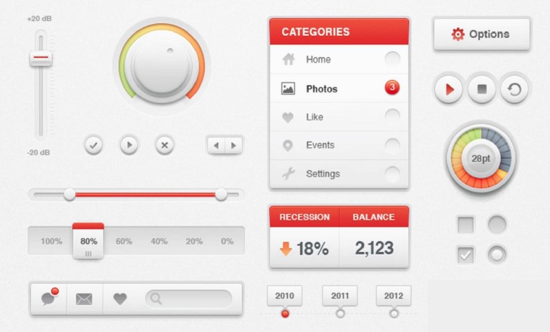
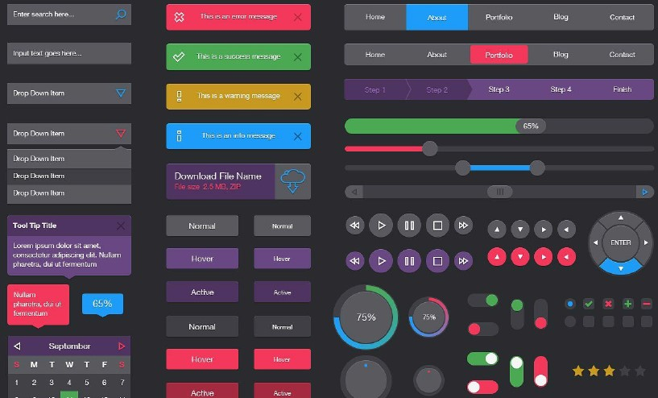

Справочник HTML/CSS/JavaScript
Главная
WEB-DESIGN
HTML
CSS
CSS3
JS
PHP
Photoshop
Avacode
Figma
Прототип
Копирайт
Moodboard
UI-дизайн
Макет
Цвет
Геометрия
Типографика
Изображения
Формы
Фактойды
Композиция
Фоны
Иконки
Мой Справочник | WEB-DESIGN | UI-дизайн
РЕАЛИЗМ

Стиль, при котором элементы интерфейса максимально приближены к реальным. Его достаточно тяжело реализовывать.
ПЛОСКИЙ СТИЛЬ (FLAT)

Минималистичный дизайн, без лишних эффектов.